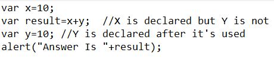
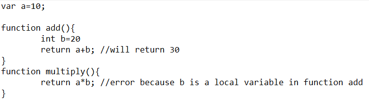
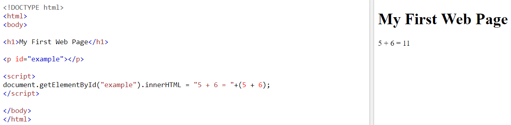
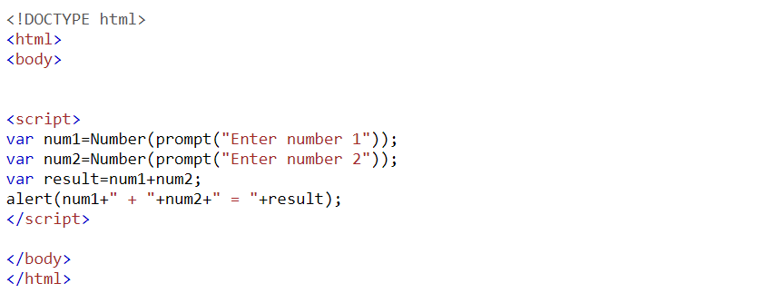

JavaScript often abbreviated as JS, is a high-level, interpreted programming language that conforms to the ECMAScript specification. JavaScript has curly-bracket syntax, dynamic typing, prototype-based object-orientation, and first-class functions. Alongside HTML and CSS, JavaScript is one of the core technologies of the World Wide Web. JavaScript enables interactive web pages and is an essential part of web applications. The vast majority of websites use it, and major web browsers have a dedicated JavaScript engine to execute it.
Concepts- Variable Hoisting
Basically, when Javascript compiles all of your code, all variable declarations using var are hoisted/lifted to the top of their functional/local scope (if declared inside a function) or to the top of their global scope (if declared outside of a function) regardless of where the actual declaration has been made. This is what we mean by “hoisting”. Functions declarations are also hoisted, but these go to the very top, so will sit above all of the variable declarations.
 - Scope in javascript
Scope is the accessibility of variables, functions, and objects in some particular part of your code during runtime. In other words, scope determines the visibility of variables and other resources in areas of your code There are two type of scope, global and local. Global scope variable are the variable which are visible to every function in the file while local scope variable are the variable which are only visible in the method.

The biggest advantages to a JavaScript having a ability to produce the same result on all modern browsers.
- Client-Side execution:
- User Interface Interactivity:
- Rapid Development:
- Browser Compatible:
- Make XMLHttpRequest() Object:
No matter where you host JavaScript, Execute always on client environment to save a bandwidth and make execution process fast.
JavaScript used to fill web page data dynamically such as drop-down list for a Country and State. Base on selected Country, State drop down list dynamically filled. Another one is Form validation, missing/incorrect fields you can alert to a users using alert box.
JavaScript syntax's are easy and flexible for the developers. JavaScript small bit of code you can test easily on Console Panel (inside Developer Tools) at a time browser interpret return output result. In-short easy language to get pick up in development.
The biggest advantages to a JavaScript having a ability to support all modern browser and produce the same result.
XMLHttpRequest is special JavaScript object that was designed by Microsoft. XMLHttpRequest object call as a asynchronous HTTP request to the Server for transferring data both side without reloading the page.
Biggest disadvantages to a JavaScript, code visible to everyone.
- Code Always Visible:
- Bit of Slow execute:
- Stop Render:
The biggest disadvantages is code always visible to everyone anyone can view JavaScript code.
No matter how much fast JavaScript interpret, JavaScript DOM (Document Object Model) is slow and will be a never fast rendering with HTML.
JavaScript single error can stop to render with entire site. However browsers are extremely tolerant of JavaScript errors.
Biggest disadvantages to a JavaScript, code visible to everyone.
- Web Development / Web Applications
- Games
- Server applications
JavaScript is a client-side programming language which helps web developer to do Web Application Development and make dynamic and interactive web pages by implementing custom client-side scripts. Developers can also use cross-platform runtime engines like Node.js to write server-side code in JavaScript
There is a number of frameworks that enable JavaScript applications to run on mobile and on desktop, and there is a number of game development frameworks for JavaScript. One of the major players in game development, Unity, used to have a dialect of JavaScript as its scripting language.
Node JS is built on Chrome's Javascript runtime for
building fast and scalable network applications.
It uses event-driven, lightweight and efficient applications
which are to be distributed over the systems with the help of a server.
Javascript is used to handle HTTP requests and generate contents.
- Inner HTML Example link
- Alert box number addition
This program adds two number and displays the result in P tag using innerHTML
This program takes two number from user, adds them, and then displays the result to user in alert box
